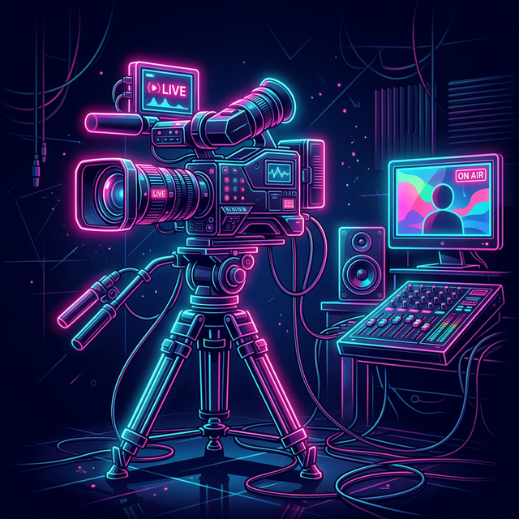

キャストの皆様、お疲れ様です！DXLIVE公式サイト運営チームです。
今回は、ファン（会員様）からのチップやアクションに連動して動き、配信を劇的に盛り上げるインタラクティブトイ**「Lovense（ラブンス）」**の導入から接続、設定までの使い方をわかりやすく解説します。
💡 ラブンスはどこで手に入る？
Amazonなどの公式ストアで購入できるほか、DXLIVEのマイレージ交換ページでご自身で入手したり、会員様におねだりすることも可能です！準備ができたらさっそく連携していきましょう。
1 インストール
DXLIVEでラブンスを利用するには、パソコン（Google Chromeブラウザ）の設定が必要です。
- アカウントの作成： まずはLovenseの公式ページでアカウントを作成します。
- 拡張機能のダウンロード： DXLIVEの会員画面（リモートトイ一覧など）から、専用のChrome拡張機能「Lovense Cam Extension」のZIPファイルをダウンロードします。
- 拡張機能の展開： ダウンロードしたZIPファイルを右クリックし、「展開（解凍）」を選択して任意の場所に保存します。（※展開したファイルは削除しないでください）
- Chromeへの追加： Google Chromeのメニューから「拡張機能」＞「拡張機能を管理」を開きます。
- デベロッパーモードをON： 右上の「デベロッパーモード」をONにし、「パッケージ化されていない拡張機能を読み込む」ボタンをクリックして、先ほど展開した `lovense_cam` フォルダを選択します。一覧にアイコンが表示されればインストール完了です！
2 接続
次はラブンス本体とパソコン（またはスマホ）をBluetoothで繋ぎます。最も一般的な「スマホアプリ（Lovense Connect）」を経由してPCと接続する方法を紹介します。
- ラブンス本体の電源を入れ、ペアリング待ち状態にします。
- スマートフォンに「Lovense Connect」アプリをインストールし、同じWi-Fi上でアプリを開いておもちゃをBluetooth接続します。
- スマートフォンのアプリと、PCにインストールしたLovense拡張機能が通信し、接続が完了します。（※お持ちの場合は、PCに直接USB Bluetoothアダプタを挿して接続することも可能です）
3 DXLIVEと連携する（つなげる）
おもちゃが接続できたら、いよいよDXLIVEのシステムと連携させます。
- Chromeに追加した「Lovense Cam Extension」のアイコンをクリックして開きます。
- 対応サイトのリストから「dxlive」を選択します。
- 表示されたログイン画面で、DXLIVEのキャスト用ログインIDとパスワードを入力してログインします。これでアカウントとの連携が完了し、配信画面のチャットとおもちゃが同期するようになります。
4 チップメニューを設定して使う

連携が完了すると、特定のチップ数に応じたおもちゃの振動パターンや強さ（Tip Menu）を設定できるようになります。
✨ ここがポイント！
ラブンスをDXLIVEと連携させた状態で配信を開始すると、DXLIVEのトップページのおすすめ一覧などで、あなたのサムネイル枠に「ラブンス」バッジがキラキラと点滅します！
「ラブンス対応配信であること」が一目でわかるため、お客様（会員様）の興味を強く惹きつけ、集客アップに直結します。
チップメニューを工夫して、「●●チップで強振動！」「●●チップで10秒間パターン振動」など、ゲーム感覚で会員様と一緒に盛り上がりましょう。
5 トラブルシューティング
もしおもちゃが動かない、反応しない場合は以下の項目をチェックしてみてください。
- 充電はありますか？：本体の充電が切れていないか確認してください。
- アプリは起動していますか？：スマホ経由の場合、「Lovense Connect」アプリがバックグラウンドで強制終了されていないか、最新バージョンか確認します。
- 拡張機能はONになっていますか？：Chromeの拡張機能管理画面で、「Lovense Extension」が有効になっているか、またパズルのピースアイコンからピン留めされているか確認してください。
分からないことがあれば、いつでも担当スタッフまでお気軽にお問い合わせください。それでは、楽しい配信を！